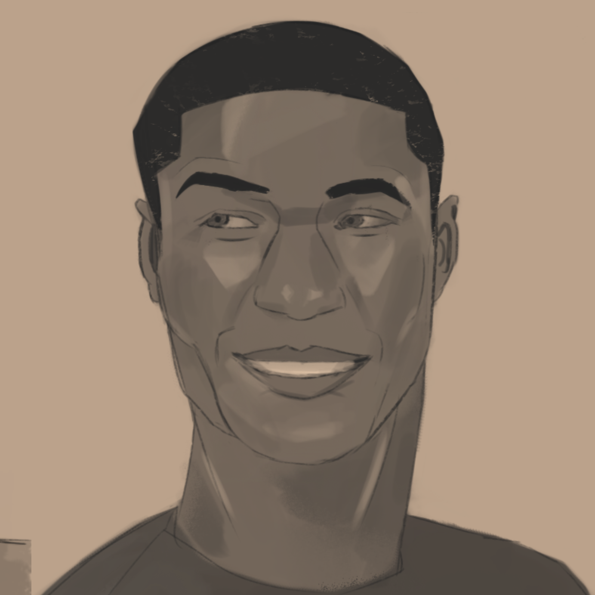

I'm a Computer Science undergraduate student at University of Massachusetts Lowell. I currently work as a Front-end developer in one of the University's labs. I aspire to be a Full-stack web developer and create intuitive and instructive applications.
| Hobbies | ||
|---|---|---|
| Reading | I love to read. That is a recent development; when I was younger, I hated reading because of boring books I was assigned. Things changed after I started reading science fiction. My favorite books are "Dune" and "This is how you lose a time war." | Art | Although I don't have much time anymore, I love to spend some of it creating art. It can be very relaxing, but during the semesters I don't always have the most time. That makes it a lot more of a stressful thing, but I hope to get back into things soon! |  |